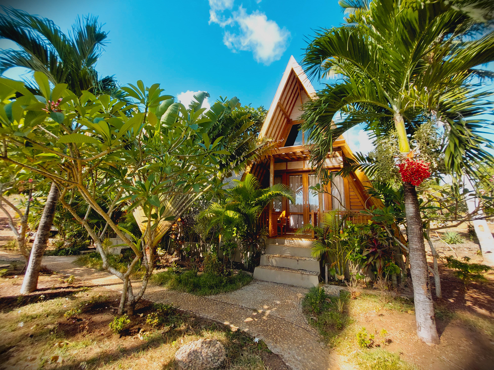
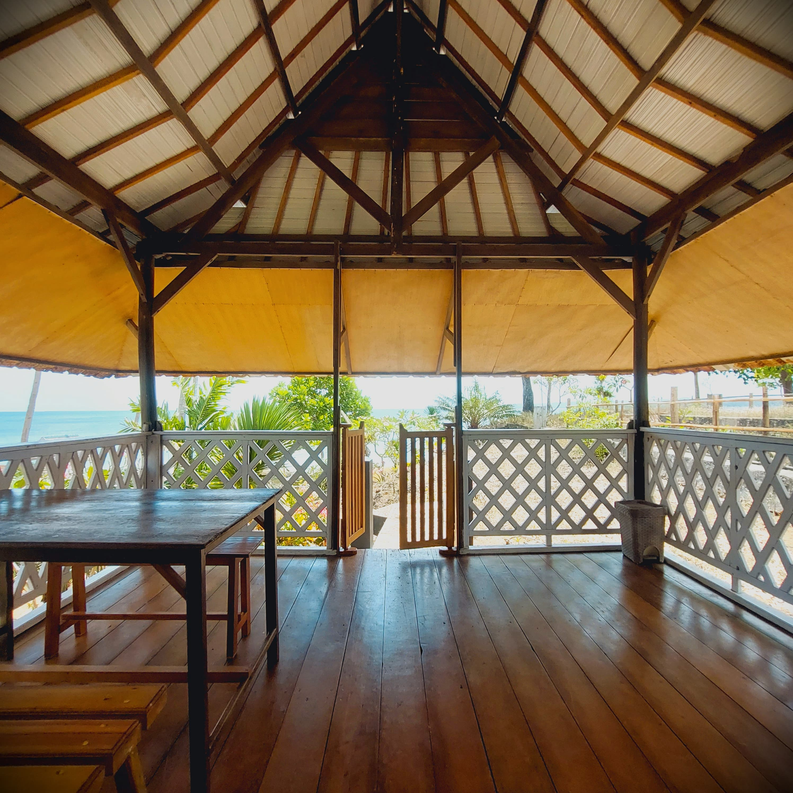

Tentang SunaRi
Selamat pagi dari Pantai Sunari.
Ketuk untuk lanjut →


02 — 07
Tentang SunaRi
Tempat senja pulang
Resort tepi pantai di Pantai Sunari, pesisir barat Kepulauan Selayar, Sulawesi Selatan.

03 — 07
Arti nama
Matahari yang menari
Sun + Nari: matahari yang menari turun ke laut Selayar. Pagi tenang, sore ditutup senja.

04 — 07
Tempat menginap
Bangun di bungalow kayu
5 tipe bungalow dengan teras pribadi, ber-AC dan Wi-Fi, sudah termasuk sarapan.

05 — 07
Teras pribadi
Kopi di teras, laut di depan mata
Duduk santai sebelum hari dimulai. Pilih pemandangan laut atau taman.

06 — 07
Bajoy Beach Resto
Sarapan di antara bougenvil
Buka 07.00–21.00 WITA. Ikan bakar & seafood, sarapan termasuk untuk tamu menginap.

Tentang SunaRi
Pagi yang pelan, senja yang dikenang.
Bungalow kayu dengan teras pribadi
Sarapan termasuk, Wi-Fi & AC
Bajoy Beach Resto, 07.00–21.00 WITA
Sewa kayak & antar-jemput bandara/pelabuhan
Info & reservasi
WhatsApp 0821-8903-3044
#SunaRiSelayar